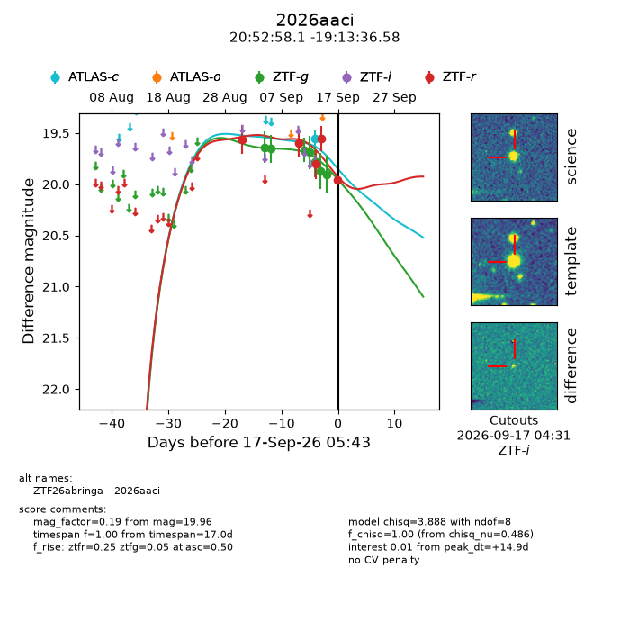
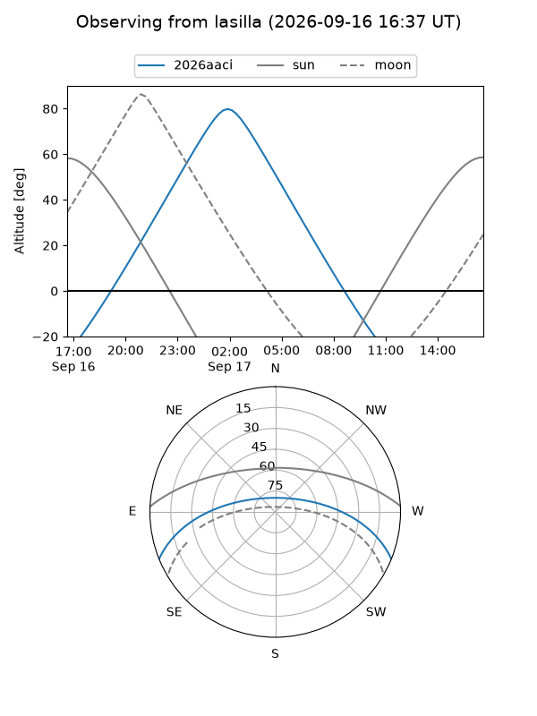
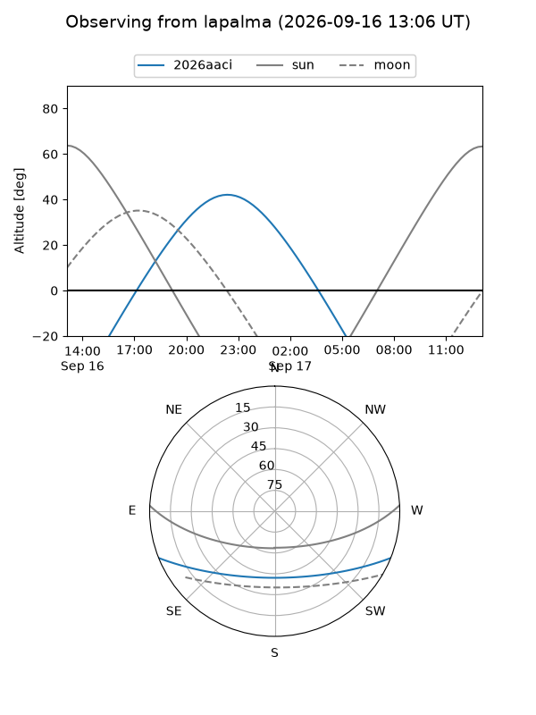
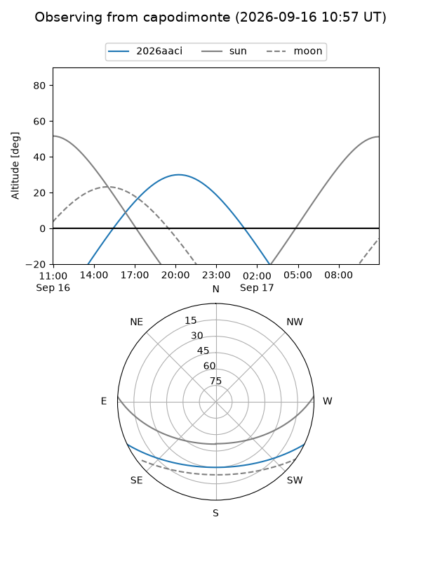
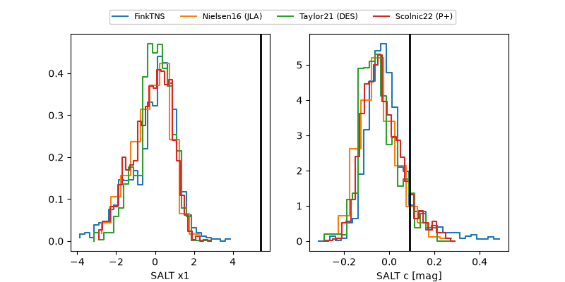

2026aaci
Target 2026aaci at 2026-09-17 05:45
Aliases and brokers:
FINK-ZTF: ztf.fink-portal.org/ZTF26abringa
Lasair-ZTF: lasair-ztf.lsst.ac.uk/objects/ZTF26abringa
ALeRCE-ZTF: alerce.online/object/ZTF26abringa
YSE-PZ: ziggy.ucolick.org/yse/transient_detail/2026aaci
TNS name: wis-tns.org/object/2026aaci
Direct TNS query: direct search
alt names
ZTF26abringa (ztf,fink_ztf)
2026aaci (tns,yse)
Coordinates:
equatorial (ra, dec) = 313.2422,-19.22683
equatorial (HMS+DMS) = 20:52:58.12,-19:13:36.58
galactic (l, b) = (27.6489,-35.11252)
Flags:
TNS type: nan
peak dt: +14.9
Photometry:
last atlasc=19.56, ztfg=19.90, ztfr=19.96
1 atlasc, 7 ztfg, 5 ztfr detections
Lightcurve

Visibility



Additional plots
